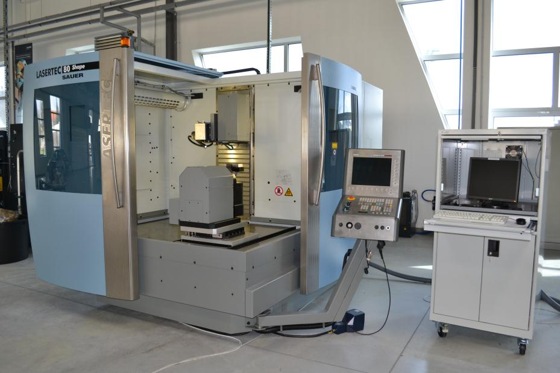
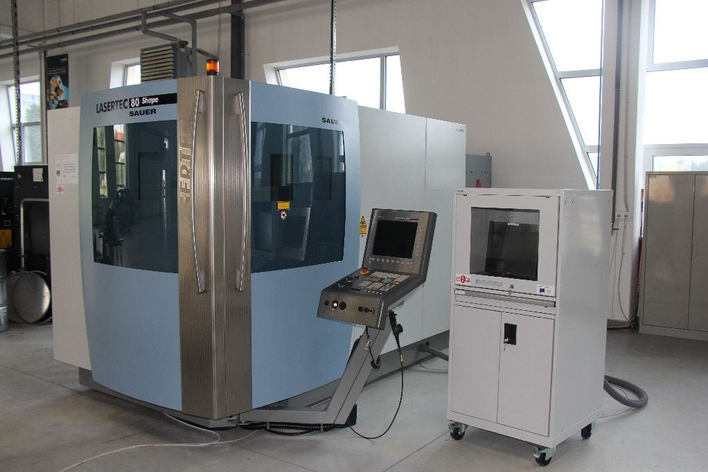
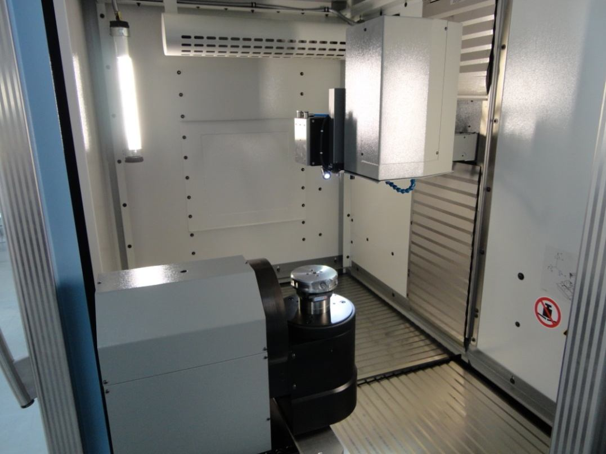
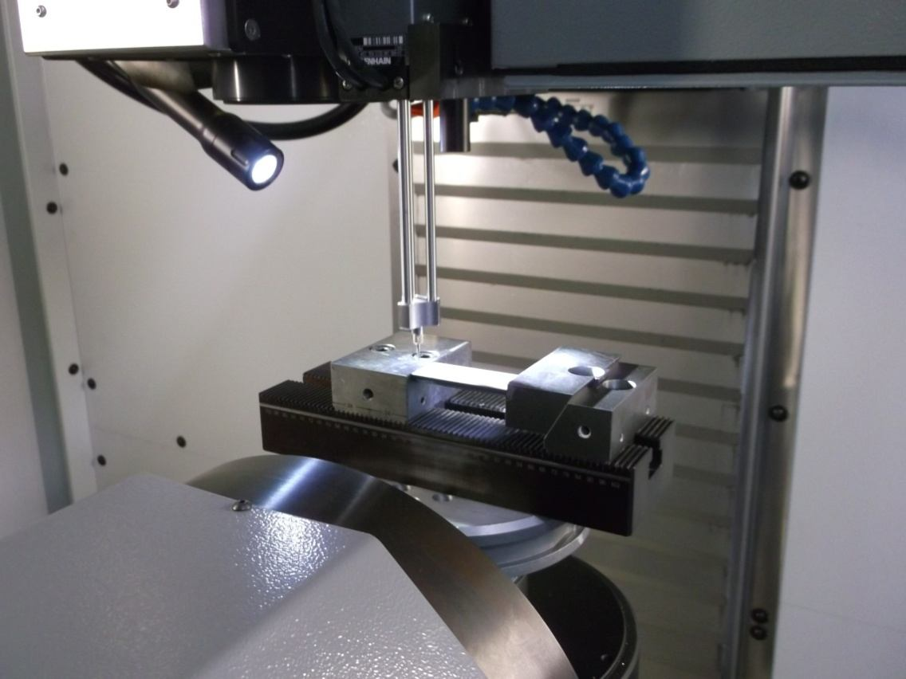
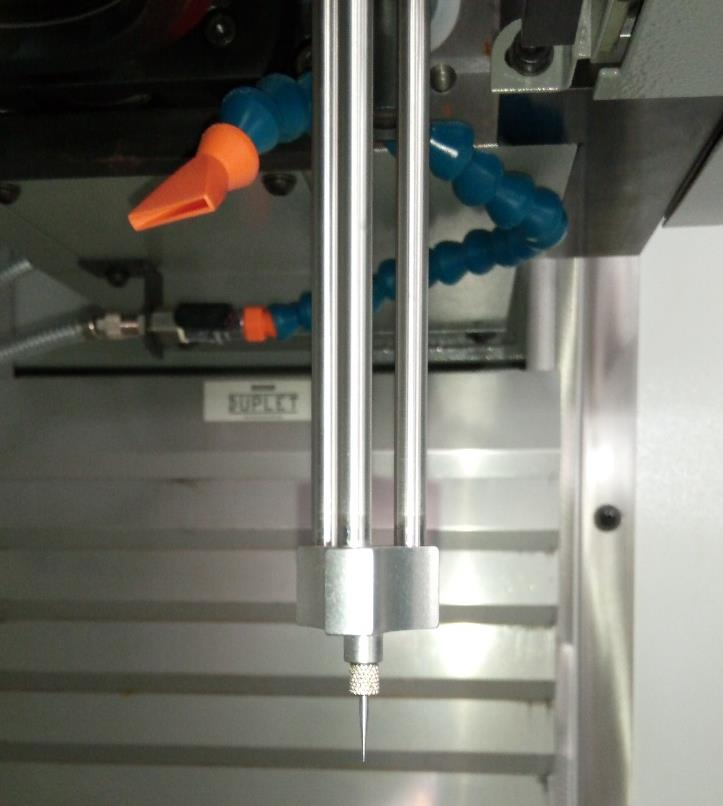
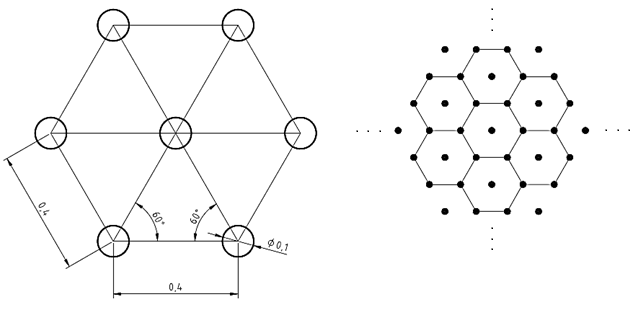
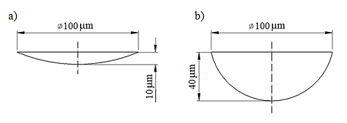

LASERTEC 80 Shape
5-Axis Precision Laser Machining System · DMG MORI
Centre of Excellence for 5-Axis Machining (CE5AM)
Materiálovotechnologická fakulta · STU Bratislava

CE5AM, MTF STU Trnava
Overview & Context
Machine description · Location · Purpose
What is the LASERTEC 80 Shape?
- 5-axis precision CNC laser machining system by DMG MORI (formerly SAUER)
- Located at the CE5AM — MTF STU Trnava
- Purpose-built for:
- Laser structuring and engraving of injection molds
- Laser micro-machining and material ablation
- Functional surface texturing (tribological, decorative)
- Chip-breaker manufacturing on cutting inserts
- Two laser systems at MTF STU Trnava:
LASERTEC 80 Shape + Laser TruDisk 4002 (TRUMPF)

LASERTEC 80 Shape SAUER — Siemens 840D CNC control panel visible
Laser Source
Fiber Nd:YAG · Wavelength · Power · Pulse parameters
Fiber Nd:YAG Laser — Key Parameters
| Parameter | Value |
|---|
| Laser type | Fiber (Ytterbium) Nd:YAG |
| Wavelength | 1064 nm |
| Average laser power | 100 W (max) — optional upgrade to 200 W |
| Operation mode | Pulsed only |
| Pulse frequency range | 20 – 100 kHz |
| Beam diameter at focus | ~1 µm |
| Minimum track width | down to 40 µm |
- Pulsed regime → precise material removal without excessive thermal load
- Same fiber laser family used in the larger LASERTEC 210 Shape
Axes & Working Space
5-axis kinematics · Travel ranges · Table configurations
5-Axis Configuration & Working Space
| Axis | Travel / Range |
|---|
| X-axis | 800 mm |
| Y-axis | 500 mm |
| Z-axis (focus) | 700 mm |
| B-axis (swivel) | −110° to +150° |
| C-axis (rotation) | 360° |
| Config | Table size | Max load |
|---|
| 3-axis | 900 × 600 mm | 200 kg |
| 5-axis (sm.) | Ø 200 mm | 14 kg |
| 5-axis (lg.) | Ø 400 mm | 40 kg |
- Scanner deflection: ±60 mm
- Clamping: EROWA clamps

Workspace interior: scanner head (top), rotary-tilt table (B+C axes, bottom-left)
Machine Construction
Components · Drive system · Sensors
High-Dynamic Linear Drive System
| Parameter | Value |
|---|
| Rapid traverse X / Y | 120 / 120 m/min |
| Rapid traverse Z | 30 m/min |
| Acceleration (X / Y) | > 1.2 g |
| Scanning speed range | 100 – 4 000 mm/s |
- Linear drives in X and Y axes — no mechanical backlash
- 4th and 5th axis: water-cooled torque discs
- Classified as highly dynamic laser machining center
- Enables 5-axis structuring of large forming tools and narrow molds with exhaust channels
Key Machine Components
- Machining enclosure — sealed, interlocked laser-safety doors (Class 1)
- Scanner head — lenses + mirrors, deflects beam ±60 mm
- Rotary-tilt table — B + C axes, EROWA clamping
- Machine control unit — drives all axis movements
- Standalone control PC — manages scanner + laser (LaserSoft 3D)
- CCD camera — 50× magnification, X/Y-adjustable
- 3D measuring probe — workpiece alignment & material removal measurement
- Extraction unit — 1050 × 1200 × 2000 mm
- Cooling unit — 1110 × 800 × 1450 mm

3D measuring probe (item 7) touching a workpiece on the rotary table
Control & Software
Siemens 840D · LaserSoft 3D · LpsWin · Workflow
Control Architecture & Software
| Component | System |
|---|
| CNC control | Siemens 840D powerline / solutionline |
| Laser process control | LaserSoft 3D — dedicated controller |
| Programming software | LpsWin — bitmap import, paths |
- Contour-parallel shaping: focus shifts dynamically along Z
- Slicing: typically 0.002 mm per layer
- Track width: down to 40 µm

3D measuring probe tip — for fast workpiece setup and depth measurement
Laser Texturing Process Chain
1. CAD / Texture Design
↓
2. Bitmap / Vector Generation
↓
3. LpsWin — coordinate system, slicing, path calculation
↓
4. NC Program Generation
↓
5. Machine Warm-Up + Test Run (reduced power)
↓
6. Production Run — LASERTEC 80 Shape
↓
7. 3D Scan / Measurement (ATOS, CCD, roughness meter)
- Steps 1–3: replaceable by third-party CAM/CAD software
- Steps 5–6: require native LaserSoft 3D / LpsWin
- Test run on non-functional surface before production
- Layer-by-layer ablation — each pass ~1 µm
- Final depth: 10–40 µm depending on texture type
Technical Specifications
Full datasheet — DMG MORI
Technical Specifications Summary
| Laser |
|---|
| Source type | Fiber Nd:YAG (Ytterbium) |
| Power | 100 W / 200 W |
| Focal length | 100 / 160 / 255 mm |
| Pulse frequency | 20 – 100 kHz |
| Scanning speed | 100 – 4 000 mm/s |
| Beam diameter | ~1 µm |
| Track width | down to 40 µm |
| Machine & Installation |
|---|
| Input power | max. 72 kVA |
| Operating voltage | 400 V / 50 Hz |
| Machine dimensions | 3335 × 2058 × 2290 mm |
| Footprint (all units) | 4500 × 6000 × 2300 mm |
| Total weight | 7 000 kg |
| Control system | Siemens 840D |
Source: DMG MORI LASERTEC 80 Shape datasheet (2013–2017)
Applications
Fields of use · Texture types · Material compatibility
Fields of Application
| Application | Description |
|---|
| Injection mold texturing | Engraving fine surface structures on mold cavities |
| Chip-breaker manufacturing | Micro-machining of cutting inserts (sintered carbide) |
| Surface texturing | Functional tribological textures — dimples, grooves, hatching |
| Forming tool structuring | 5-axis laser structuring of large pressing tools |
| Narrow mold machining | 5-axis engraving of molds with exhaust channels |
| Coating ablation | Selective removal of PVD/CVD coatings (track width ≥ 40 µm) |
- Materials: sintered carbide (WC-Co), titanium alloys, tool steels, coated surfaces
Surface Texture Examples — CE5AM MTF STU Trnava

Hexagonal dimple array — pattern geometry with pitch 0.4 mm, Ø 0.1 mm dimples

Dimple cross-sections: a) shallow 10 µm depth, b) deep 40 µm depth — both Ø 100 µm
- Texture area coverage: ~6% of total surface — optimised for tribological effect
- Strategies: hatching (parallel scan lines) vs. contouring (outline-following)
LASERTEC 80 vs. 210 Shape
Size comparison — when to use which
LASERTEC 80 Shape vs. LASERTEC 210 Shape
| Parameter | LASERTEC 80 Shape | LASERTEC 210 Shape |
|---|
| X-axis [mm] | 800 | 1 800 |
| Y-axis [mm] | 500 | 2 100 |
| Z-axis [mm] | 700 | 1 250 |
| Table 5-axis [mm] | Ø 200 / 400 | Ø 1 850 |
| Max load 5-axis [kg] | 14 / 40 | 8 000 / 10 000 |
| Rapid traverse X/Y [m/min] | 120 / 120 | 60 / 40 |
| Total weight [kg] | 7 000 | 42 000 |
| Input power [kVA] | max. 72 | max. 103 |
- LASERTEC 80: compact, high-speed — precision parts, molds up to medium size
- LASERTEC 210: large-format — automotive-scale tools and dies
Source: DMG MORI (2013)
Experimental Parameters
Typical ranges used at CE5AM MTF STU Trnava
Typical Process Parameters — MTF STU Trnava
| Parameter | Range used |
|---|
| Laser power | 10 – 100 W (10 – 100 % of max) |
| Pulse frequency | 20 – 100 kHz |
| Scanning speed | 200 – 4 000 mm/s |
| Focal distance | 100 mm (typical for micro-machining) |
| Laser spot diameter | 0.025 – 0.1 mm |
| Layer removal depth | ~1 µm per pass |
| Max texture depth | up to 40 µm per feature |
| Pulse duration | 10 ms – 120 ns (mode dependent) |
Source: experimental studies on sintered carbide, Ti alloys, tool steel — CE5AM MTF STU Trnava
Safety & Installation Requirements
- Laser safety class — requires sealed enclosure with interlocked protective doors
- Mandatory fume extraction unit: 1050 × 1200 × 2000 mm
(removes ablation particles, toxic gases, and metallic vapour)
- Dedicated water cooling circuit for torque disc motors and laser source
- Electrical supply: 400 V / 50 Hz, max 72 kVA
- Total footprint (machine + all units): 4 500 × 6 000 × 2 300 mm
- Total machine weight: 7 000 kg — requires reinforced floor
Summary
- LASERTEC 80 Shape is a 5-axis, high-dynamic precision laser machining centre
- Fiber Nd:YAG laser (1064 nm, 100 W), pulsed mode 20–100 kHz, track width ≥ 40 µm
- Linear drives >1.2 g acceleration — exceptionally fast repositioning
- Full software chain: LpsWin → LaserSoft 3D → Siemens 840D CNC
- Proven at CE5AM MTF STU Trnava on sintered carbide, titanium alloys, and tool steels
Data source: DMG MORI LASERTEC 80 Shape technical documentation (2013–2017)
Experimental results: student theses, MTF STU Trnava